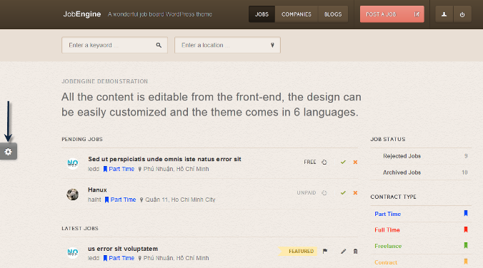
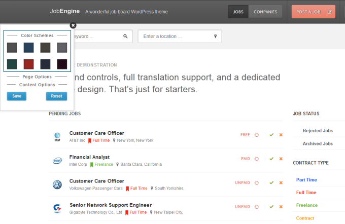

Job Engine Documentation
Engine Themes
- created: 03/10/2011
- latest update: 05/17/2014
- by: Engine team
- email: support@enginethemes.com
Thank you
Quick setup
Once you have successfully installed your JobEngine theme, a “setup wizard” notification will appear to help you set up the basic configuration of your website.
If you miss to click the message and want to use the Setup Wizard, you may click Engine Settings > Setup Wizard from back-end.
The Setup Wizard helps you configure your website step-by-step from branding, content, payment, and inserting sample data.
1. Branding
This part will ask you to upload logos for your site’s desktop and mobile versions and to provide your website title and description. Should you want to make any changes on your branding later, you can access Engine Settings > Settings > Branding from back-end.
Logos for desktop and mobile have different image file requirement:
Desktop version logo
- Preferably transparent
- png, gif or png format
- 150x50px image size
- Less than 200kb image file size
Mobile version logo
57x57px image size
2. Content
This step will require you to create your site’s basic contents including job types and job categories. You may add as many as you wish.
2.1 Job Types
There are two things you will need to do to add a job type:
a. Choose color of icon and text
b. Enter job type name
2.2 Job Categories
Job Categories allows you to categorize jobs according to fields. You can add or remove as many categories and sub-categories as you deem necessary.
To add a category, hit Add New [+] button, enter category name on the box and press Enter on your keyboard. You can add sub-categories by hitting [+] button on the right of the main category.
To remove a category, hit [x] button. Please note that removing a main category will also remove all its sub-categories.
3. Payment
Here, you will need to setup your payment gateways and payment plans.
A. Payment Gateways
JobEngine supports payment transactions in Cash and through Paypal, 2Checkout, and Google Checkout. You may use any or all of these payment methods; however, for non-cash payments, you will need to check first if your currency is supported by these three payment gateways.
To start payment setup, select the currency you want to use from our default currency list. If your desired currency is not in the list, please refer to Add New Currency -> hyperlink> page.
1. Paypal
To use Paypal, hit Enable then enter the email address associated with your Paypal account. If you need to register a new Paypal account, visit https://www.paypal.com/signup.
2. 2Checkout
To use 2Checkout, press Enable and enter your 2Checkout ID and 2Checkout secret key in their designated boxes.
Should you need to register a new 2Checkout account, click https://www.2checkout.com/signup.
3. Cash
If your currency is not supported by our payment gateways, you may use Cash as payment method. Just hitEnable to activate this method. Every time your clients successfully post a job on your site, a message containing your bank account number will appear on screen to notify them where to send their payments and when their job will be active.
B. Payment Plans
Payment plans let your customers choose the best plan for their jobs. Each payment plan informs your customers how long their job will be active on the site and how much it will cost them.
To create a new payment plan:
1. Enter payment plan’s name, price, and job post duration in designated fields.
2. Tick Featured Job box if you wish all jobs under this plan will be featured.
3. Click Save Plan.
4. Insert Sample Data
JobEngine provides sample data that you can use should you want to see how your live site would look like before inputting your own data. We advise you to use this feature ONLY when you have not keyed in your own data yet.
To use our sample data, simply click Insert Sample Data. JobEngine will automatically load the data to your site.
Once sample data were inserted, this is how your live site will look like.
Overview
This is an overview page which helps you to observe and have some summary statistics in a specific time. This page includes:
- Pending jobs
- Posted jobs
- Revenue you have made
- Applications
- Latest payments
- Latest companies
[Settings] General
1. General
- Your website information can be edited anytime from your back-end control: Engine Settings > Settings > General. These information include:
1. Website title
2. Website Description. This will appear next to your logo in header.
3. Website Demonstration. When at Jobs page, customers will see this section below your search boxes.
4. Copyright Information. This will appear in the footer.
5. Social Links. You may add your Twitter, Facebook, and Google Plus links to boost your social media presence. Customers will see these links in the footer.
6. Google Analytics. This is a service offered by Google that generates detailed statistics of the visits made to your site.
Google Captcha
Google reCAPTCHA helps prevent automated abuse of your site. By using a CAPTCHA to ensure that only humans perform certain actions (Register, Post job, Apply job ..).
Firstly, you need signing up with Google to have Public key and Private key then insert the keys in the empty fields.
[Settings] Branding
- You’ve already set up this part in the Setup Wizard section
[Settings] Jobs
- This page helps you to quickly create new Job type or Job categories.
- Pending Jobs: If you enable this fuction, new posted jobs will have to wait for your acceptance to appear on the site.
- New Post Alert: This function allows you to receive notification email whenever a new job being posted on your site.
[Settings] Payments
- Besides the information you’ve already set up in the Setup Wizard section, you have to implement these following fields:
o Currency: Select the suitable currency. You can also add new currency according to your preference by clicking [Add a new currency]
o Payment test mode: If you enable this function, customers won’t be charged any fee when they do their transaction.
o Payment Gateway: Bạn đã thiết lập trong phần Setup wizard
o Limit Free Plan Use: This option allows you to limit how many times a user can use the Free package when posting a job. Ex: if you insert 2 then user can use the Free package only 2 times.
[Settings] Mailling
This section allows an administrator to control all contents of an email sent to users. JobEngine provides eight templates and placeholders for authentication and job-related emails.
Should you need to add other information in the e-mail, you can edit the templates anytime. However, please note that placeholders cannot be modified. To save your edits in any template, just click anywhere outside the box.
I. Authentication Mail Templates
These are e-mail templates for authentication process. You may use the following placeholders for all authentication-related emails:
[user_login],[display_name],[user_email] : user info you want to send mail
[company],[dashboard] : company name, user dashboard url
[activate_url] : activate link is required for user to renew their password
[site_url],[blogname],[admin_email] : site info, admin email
1. Register Mail Template
Register email is sent to users to notify them that they have successfully registered in your site. The email contains their account information.
2. Forgot Password Mail Template
This email is sent to users requesting to retrieve password.
3. Reset Password Mail Template
Users receive this email once they activated the active link in forgot password email. It notifies them that they have successfully changed their password.
II. Job-related Email Templates
These are e-mail templates for job-related activities. You may use the following placeholders for these emails:
[user_login],[display_name],[user_email] : user info you want to send mail
[company],[dashboard] : company name, user dashboard url
[job_title], [job_link], [job_excerpt],[job_desc] : job info and detail
[activate_url] : activate link is required for user to renew their password
[reason] : reject job reason
[seeker_note],[seeker_name], [seeker_mail] : seeker info
[remind_note], [seeker_email] : reminder info
[site_url],[blogname],[admin_email] : site info, admin email
1. Sent to employers when a candidate applies for their jobs
This notifies employers of new applications in their posted jobs. It contains the applicants’ information.
2. Sent to job seekers when they want to save a job for viewing later.
This serves as an email reminder for job seekers who have saved a job posted in your site for later viewing. It includes job information for easy reference.
3. Sent to employers to notify that one of their posted jobs has been published
This email is used only when the site administrator enabled Pending Jobs to manually review and approve new jobs posted by employers. Employers will receive this email once their jobs became active on the site.
4. Sent to employers to notify that one of their jobs has been archived due to expiration or manual administrative action
Whenever a job post expired or a manual action is applied, it will be moved to archive. The employers will then receive this email as notification and reminder should they want to renew their job offer.
5. Sent to employers to notify that one of their posted jobs has been rejected.
This email is used only when the site administrator enabled Pending Jobs to manually review and approve new jobs posted by employers. If a job is rejected, the employer will be notified through this email.
[Settings] Language
Before doing the manual translation, make sure you have already added your desired language in the language selector.
To translate default language file into your desired language, follow these steps:
1. In back-end control, click Engine Settings > Settings > Language
2. Locate Translator field
3. Click Choose a Language drop down button and select the language you created for your website. JobEngine will automatically load the default language file (English).
4. Enter translation of each field in the box and hit Save. You can choose to hit Save after every entry or save them all at once.
Payments
This page enables you to track all paid and unpaid transactions made to your site. From back-end, hit Engine Settings > Payments.
You can view latest payments made through each payment gateway or view them all at once.
Companies
How many companies have posted jobs on your site and how many are new ones can be viewed on this page. You may access this page by clicking Engine Settings > Companies from back-end.
[Resumes] General
- Turn feature on: This option allows you to turn on/off Resume function in the website
- Resumes List Headline:This is the desciption which will be displayed on the top of the Resume page in the front end.
- LinkedIn API Key:
JobEngine supports importing user information from LinkedIn to your jobseekers’ profile. You only need to register one LinkedIn API Key to set the system rolling.
Let’s start creating the LinkedIn API Key by opening https://www.linkedin.com/secure/developer?newapp=
You can add a new application either for a new or existing company. Select “New Company” if this is the first time you’re going to register an application.
Fill out the form. Make sure all required fields are filled out.
Currently, JobEngine’s resume form includes fields for basic profile so you will need the API Key to import those data only. Under Oauth User Agreement > Default Scope, tick only the r_basicprofile.
As you only need to get the API Key, you can skip OAuth 1.0 redirect Url, OAuth 1.0 cancel Url, or App Logo Secure URL.
You may choose your language in the Agreement Language section.
Finally, enter in the JavaScript API Domains your site domain that will use the LinkedIn API Key (e.g. demo.enginethemes.com/jobengine/)
Tick “I have read and agree to the LinkedIn API Terms of Use” and submit your registration. If successful, you will see the API Key in the application details summary.
Copy and paste the API Key on “LinkedIn API Key” field in Engine Settings > Resume. Please remember to click the mouse outside the box to save your key.
Now, your jobseekers can start load their LinkedIn information on the registration form of your JobEngine when they create a profile.
- Login-to-view Resume: If you enable this function, only users who's aready logged in can see the resumes.
[Resumes] Content
- Similar to the Jobs section, this is the page which allows you create new categories for resumes.
- Pending Resumes: If you enable this fuction, new posted resumes will have to wait for your acceptance to appear on the site.
[Resumes] Payment
- Pay-To-View Resumes: If you enable this function, users will have to pay money to see the resumes.
- Payment Plans: Similar to the Post job section, you have to create payment plans for users.
o Name of your plan: Insert the name of the payment plan
o Price: Insert price for the plan
o Duration: Insert the valid time for the plan. Ex: if you insert 2 (days), then 2 days later, users have to re-buy the package to see the resume.
o Descriptions: Brieftly describe about the plan.
o After completing all the fileds, don’t forget to save your plan. You can also edit, delete or arange these plans.
[Resumes] Mailling
1. This setting similar to the setting in the Job section above.
Widgets
To provide a more flexible layout customization, the Contract Type and Job Categories filters were turned into sortable widgets. With the drag and drop feature, it will be easier to reorder them along with the other widgets in the sidebar directly on the frontend and on the backend.
From the backend, locate these widgets by clicking Appearance > Widgets.
Drag the Contract Type and Job Categories widgets to the main sidebar. These will be shown in the index page.
From the frontend, move the widgets by dragging the “drag and drop” icon to where you want them positioned in the sidebar. The icon becomes visible when you hover the cursor on the right of the widget title.
- There are also other widgets:
o JE Companies & Jobs Count: This widget displays the total number of companies and jobs appearing in the website.

o JE Company profile: Display profile of the company
o JE Location Fillter: Allow you to fillter job’s location
o JE Resume categories: Similar to the Job Categories section, this widget allows you to fillter the resumes based on specific categories.
o Resume Count: Display the total number of Resumes on the website.
o Resume search: You can search the resume you want to see.
Fontend Customizing
JobEngine (JE) supports quick customization in front-end to help you easily manage your site’s appearance including layout, font, and color.
To customize your site from front-end, click Active Customization Mode icon located at the middle left of the page.

It will display three parts to modify:
1. Color Schemes. This allows you to change your site’s color scheme. There are eight colors available for your choice.

2. Page Options. This enables you to change your site’s layout, background patterns, hyperlink color, and background colors of header, page, and footer.
- Layout Style. Choose whether one column, two columns with left sidebar, or two columns with right sidebar is best for your site.
- Background Patterns. Job Engine provides eight simple background patterns to give your site a sleek look.
- Colors. You can change the colors of your site’s header, page, and footer backgrounds to achieve a color-coordinated or distinct style.
3. Content Options. This is where you can change the font style and font size of your site’s heading and content.